吐槽and说明
原长论篇的电影评论区和其他二次元内容有点格格不入了，于是这边决定将电影评论区迁出，单开一个文档。
评分标准沿用bgm评分标准。不太熟悉豆瓣的标准。
标题决定采用类gal测评的方式，即上映时间+标题的形式。但是由于markdown中中括号有特殊含义，因此换成小括号。上映时间以首映时间为准。
2025.02.16
TODO List
记下一些还没看的以及看完没写影评的电影。
熊出没之过年 (豆瓣)
熊出没之年货 (豆瓣)
熊出没大电影系列的起点，作为微电影这两部是真的挺优秀的，有时间再看一遍。
熊出没之雪岭熊风 (豆瓣)
熊出没大电影系列的起点，奠定了熊出没不灭金身名作之壁的基础的一部电影。
顺带一提第一部进电影院的大电影是夺宝熊兵。
西游记之大圣归来 (豆瓣)
国产动画电影崛起的第一座里程碑。
魁拔之十万火急 (豆瓣)
魁拔系列，叫好不叫座的动画电影，当年真的是国产动画的良心，可惜生不逢时。前三部诞生的年代实在是太早了（2011、2013、2014），那时候的国产动画电影可以说是彻彻底底的荒漠，拓荒者中唯一的成功者只有喜洋洋大电影。
目前魁拔系列的收官之作第四部跳票数年仍遥遥无期，不知道哪吒2的再次成功能不能使得导演王川拉到投资？
顺带一提王川最新参与的作品是《黄貔：天降财神猫》
神秘世界历险记 (豆瓣)
童年回忆系列，记得当年还买了这个电影的吧唧，不知道放在哪了。
在2012年收获了将近2200w的票房，作为原创动画电影，这个成绩对比12年以前的动画电影还是相当不错的，后续还出了3部续作，等有时间再回顾一下童年。
十万个冷笑话 (豆瓣)
这个也是童年回忆系列了，当年追月更的十万个冷笑话真的是追的心肌梗塞。忘记有没有看电影版了。
(210618) 守岛人
档期： 2021-06-18，算是淡季上映？
最近学校组织观看了这部电影，看完后深受感触，于是咱们打算写下这篇影评。
本作主要讲述王继才王仕花守岛三十二年的感人事迹，剧情咱们不再陈述。
一个人应该成为怎样的人呢？人的一生又应该怎样度过呢？这是我们每个人都会遇到的问题。什么样的人生才能称得上是成功的呢？是富甲一方？还是权倾天下？亦或者是超凡脱俗、游戏人生？
奥斯特洛夫斯基曾在《钢铁是怎样炼成的》中写道：“人最宝贵的是生命。它给予我们的只有一次。人的一生应该这样度过：当他回首往事时不因虚度年华而懊悔，也不应碌碌无为而羞愧。这样他就能在临死时说：‘我已把我整个的生命和全部的精力都献给最壮丽的事业——为人类的解放而奋斗。’”
在中国特色社会主义现代化建设新时期，阶级斗争早已不是当今中国的主要矛盾，那么，我们又应该怎样做，才能做到人生无悔呢？
王继才王仕花的事迹或许能帮助我们寻找答案。
在他们的事迹中，最令人感动的莫过于“坚持”二字了。是什么能让他们坚守孤岛三十二年之久呢？我认为有以下几点：
一是人性中的顽强、倔强、不服输的精神。在电影一开始，汹涌的海浪像怒吼的鬼神一样向着小岛扑面而来，海水扑灭了灯塔上的火
（好吧，咱们才疏学浅，写不下去了，下次再更 2021.07.16）
N天之后的更新~~
关于楼上为什么写不下去了，原因很简单：因为这部电影根本没能回答这个问题。而这正是这部电影最致命的缺点。
作为一部宣传平凡而又伟大的凡人英雄的电影，本作过于著重渲染王继才王仕花作为普通人的酸甜苦辣，而忽略了他们作为英雄人物的伟大，这就说明本作从根本上偏离主题——它是一部优秀的人物纪录片，却不是一部优秀的社会主义宣传片。换个角度而言，这个问题就是许多评论所说的过于依赖悲剧来展开剧情。
什么叫英雄主义宣传片呢？举个例子：电影最开始的时候，面对着汹涌的海浪，王继才却英勇地向海水扑了上去，海水一次次地涌进小屋，一次次地将他打倒在地，他却一次次地站了起来，一次次地用家具堵门、用锤子钉紧窗户，用尽一切方法去与大自然搏斗，这就体现他那一种《老人与海》式的不畏自然、勇于战斗的伟大精神；在看到岛上的国旗被风雨撕烂后，他又抛下屋子，冒着风雨，冲到升旗台上取下被毁的国旗，又跑进地窖中去换一面新的五星红旗，这就体现了他的伟大的爱国精神；在看到灯塔上的火熄灭后，他又冲向灯塔，不顾狂风爬上梯子，然后修理灯火，看到有船驶向开山岛时，又敲起警锣向着海面边跑边喊，近乎癫狂，这又体现了他的伟大的敬业精神；最后看见有船只失事时，他又不顾自身安危，跳入海中去救人，这也体现了他的高尚品质——短短不到30分钟之中，就将王继才刻画得淋漓尽致，这段剧情可谓登峰造极，令人拍案叫绝。
可惜也就到此为止了。
后面的剧情都讲了什么呢？前期讲人武部领导找不到上岛的人，王继才渐渐地也不再过问了，中期讲王继才王仕花在岛上的艰苦生活和两个孩子在陆地上的困难生活，后期又是通过煽情来骗眼泪。这部分作为人物纪录片是合格的，然而作为社会主义宣传片是不合格的，甚至是反向宣传、反x的、反x的。（后两个帽子扣得有点大,因此咱们自删）前期剧情揭示了人武部的无能，动员能力极弱；中期就是守岛与家庭之间的矛盾，为了守岛，生儿子时近乎难产，家里没钱，大女儿退学打工补贴家用，甚至两孩子被人追杀；后期王继才王仕花一个心脏病、一个腿受伤，搞了个春节联欢晚会又强行煽眼泪。更为讽刺的是，虽然咱们没有调查，但毫无疑问，这些剧情都是极其符合现实的，说是真人真事都不为过。这就造成了网友们的：“虽然我很敬佩你，但我无法（不想）成为你”。这个结果是从根本上违背了党中央“发挥先进模范作用，宣传英雄人物事迹”的政治理念的。
……来自n天后的更新。
总而言之， 本篇前期在渲染上非常出色，到了中后期问题较多，比如剧情节奏过快，场景转换较为突兀，情感脉络混乱，后期纯属流水账，没啥艺术加工（某几段还不如不加工）。主演（尤其是男主）表现出色，部分配角设置不合理。 作为纪录片本片还算合格，作为电影稍欠佳。
虽说本片相对来说更重要的是政治性，但是鉴于八一电影厂过去偏政治性的好电影也不少，只能说新时代的“同志们”还需要努力啊。
最后，向守岛英雄王继才王仕花夫妇致以崇高的敬意！
2021.11.14
评价：5，作为纪录片的话或许是合格的，作为主旋律宣传片完全是起副作用的。在21年的时候或许还有人吃这套“苦难恩情”宣传，但是在25年的时候回头看这部片的话，观众们完全就不吃这一套了。
唉，人的想法、社会思潮总是在不断改变着的，一声叹息。唯一可以得到安慰的便是王继才王仕花夫妇的坚守最终得到了重视，开山岛的驻岛生活条件也在不断地改善着。
时代已然变化，现在可不是一味只讲奉献的时代了，善有善报、得到应有的奖赏才是长远之计。
2025.02.15
(240210) 飞驰人生2
档期：2024春节档
说起来，咱们好久好久没写影评了，之前看的《奥本海默》一开始想写影评的后来也鸽了。
后补：
个人认为相比贾玲减肥记，飞驰人生2更适合春节档，光是看各种赛车飙车的场面就能值回票钱了。韩寒不愧是是职业赛车冠军，专业人士拍出来的赛车片就是爽。
评价：7，中年男人的爽片，尽管过程充满艰辛，但是最终大获成功，爽就完事了。韩寒也真是幸福啊，能将自己喜欢的事物拍成电影还大获成功，这是多么爽的一件事啊。
2025.02.15
(230721) 奥本海默
档期：
北美2023-07-21
中国大陆2023-08-30，开学档？
这部片能几乎无删减上映真的挺意外的。
去年（2023）十月左右和土豆仙贝一起看的，虽然已经过去半年了，但总感觉还是想写点什么。
对于我而言，这部电影给我的最大的触动可能就是“改变世界”吧。在20世纪那个黄金时代里，不论是原子弹，还是相对论、计算机、航空科技等等，科学家们的每一项研究总能切实地改变着世界。那时的他们挑战着物理学的根基，掌握着毁灭世界的力量，永久地改变了人类政治格局和生活方式，而如今的科研似乎只是对他们已奠基的根基的小修小补罢了。放眼未来，下一个“原子弹”会是什么呢？是“永远还有五十年”的可控核聚变，还是已经陷入瓶颈的互联网与计算机、芯片？亦或者是已悄然在潜移默化影响着我们的生活的人工智能？尽管普通人想要妄想改变世界是很可笑的，但是如果去选择一份既能够满足自身温饱，又能去创造新的事物的话，那不是很好吗？
在看完这部电影之后，我对科研稍微有了点希望，我认为这就证明了这部电影的成功。
缺点：与其他人不同的是，个人感觉最大的败笔是原子弹爆炸那一刻，据说导演用了几千吨（出处未知，应该顶多也就几十吨，几千吨不太可能）TNT拍了那个镜头，但爆炸那一刻，我的感受只有“就这？”。连黎巴嫩大爆炸（300~1000吨当量）的震撼力都不如。这效果效果还是不行，得加钱！（笑）
2024.02.18
(250129) 唐探1900
档期：2025春节档
如何评价陈思诚执导，刘昊然、王宝强主演的电影《唐探 1900》？ - 张卡特的回答 - 知乎
https://www.zhihu.com/question/10693022226/answer/89221595320
如何评价陈思诚执导，刘昊然、王宝强主演的电影《唐探 1900》？ - 卢诗翰的回答 - 知乎
https://www.zhihu.com/question/10693022226/answer/89515369402
实际上个人感觉卢诗翰的回答挺不错的。
个人对于本片的评价是：一部伪装成喜剧实则是讲严肃主题的电影，一部既不适合春节档又适合春节档的电影。比起电影本身，为什么要拍这部电影更指的研究。
探案：尽管是“唐人街探案”系列，但本片的探案部分没啥好讲的，除了爱尔兰人杀掉自己女儿（甚至还开膛刨腹）确实没想到，其余的基本上都没啥意外的。
喜剧/正剧：剧情在悲喜转换上边有点唐突，前一秒还是喜剧，后一秒突然又是回忆杀；前一秒刚打生打死，后一秒又抛个包袱博观众一笑。但这并不完全是编剧的能力不足的原因，究其根本则是因为本片的实质内核是历史正剧，不是喜剧。
本片的主题实际上非常严肃非常深刻。表面上写排华法案和对中国人的种族歧视、救亡图存的历史背景，实际上则还深入到对美国、对华人群体、对资本主义和美国政治的剖析，而后者则超出了所谓爱国主旋律电影的范畴。
其余几个点实际上都是经常讨论的，但是有个点还是值得讨论的，那就是种族和美国。
华人是中国人吗？华人是美国人吗？美国人是什么人？
请注意，本片的所有剧情都发生在美国，本片的绝大多数人都是美国人（有美国国籍的人）。尽管是唐人街，但这仍是美国而不是中国，这是讨论一切的前提。
因此，比起爱国主旋律片，本片的立意更高一筹，讲特定时期的在美国的人的各种思想：
背景板的福尔摩斯和华生：早早看出这是个政治问题而非简单的犯罪事件，一方面作为欧洲白人有意避嫌，另一方面又促使了秦福去帮助破案。
秦福：开局依靠坑蒙拐骗为生，后边又真的尽心尽职成为真神探。最后死掉美国居住证，老白又把居住证粘好的剧情实际上则挺有趣的。
阿贵：具有华人与印第安人的双重身份。尽管关于印第安人的部分有点刻板印象，但是无伤大雅。有一说一王宝强的演技是真的牛。
爱尔兰人：有点过于狠了。失手杀死女儿就罢了，还开膛刨腹，你是真的狠啊。最后大方承认然后掏枪自杀的部分也挺狠的。总而言之就是个典型的老保，但尽管是反派，最后大方承认然后自杀的部分而非继续狡辩倒打一耙也算是有始有终了。
老白：一方面一穷二白白手起家但发家致富并不清白，黑白两道都沾，一方面又为华人老乡提供保障，承担责任。对待儿子则是真的好，没的说，并且在知道儿子是革命党的情况下仍认同其理想并各种保护，足以体现其进步性。这个角色真得影帝而言，除了周润发也没几个能撑得起这个角色的了。
小白：一方面典型公子哥，公子哥做派把白家上下搞得要死要活；另一方面又是早期革命党，为了革命付出一切。这个角色的因缘太多纠缠太深比如革命党身份、公子哥、爱尔兰小姐的恋人，这其中的因缘太乱了，说实话有点是为了剧情发展而塑造起的角色，从属于剧情的角色而非独立的角色，没有什么主观能动性。尽管小白导致了整个事件的发生，但在发生之后就像一个人偶一样按照预设轨道前进，并没有做出什么主动的举措。全局中小白的戏份基本就是：小白被抓了，小白被保释出来了，小白跑路了，小白被找到了，小白去运枪被爱尔兰人发现了，小白被白家人以死相救了，小白找爱尔兰人算账被杀了，小白被设计再次成为开膛手杰克的嫌疑犯，小白被尸检成为证人。总之小白本人就像一个人偶一样推动剧情发展，剧情有需要他就干什么。
郑仕良：进步知识分子革命党。这位有历史原型。
费洋古：开局是典型晚清官员的形象，但是和爱尔兰人会谈那一幕倒是成功撑起来场面，最后大战爱尔兰人那一幕实际上符合人设、具有动机的。最后最后的“救中国”争议较大，但个人感觉无伤大雅。顺带一提这位也有历史原型。
警察：堪称美帝良心，正儿八经守卫法律尊严的人。
中国通：这个角色塑造的也不错，尽管出场戏份不多。这位则是纯粹的资本家，一方面为了华工能硬生生学中文和华人打好关系，另一方面为了利益而肆意操弄舆论左右政府官员，真正的幕后boss，严重怀疑这位是犹太人。
朱连魁：这位也是有历史原型的，编剧用心了。朱连魁 - 维基百科，自由的百科全书
回到春节档的话题。作为春节档电影，挺有“教育意义”的，但是又有点血腥了，大过年看这种正剧确实有点难受，只能说导演是不怎么想把宝全压倒“爱国主旋律”上的，不然国庆节上映可能会更吃一波爱国流量。宣发则是有点“欺诈”了，喜剧只是缓和正剧的装点，探案剧情也比较初级并非重点，这样挂羊头卖狗肉的行为某种程度上也导致了豆瓣评分如此之低。
总体而言抛开剧情内核过于严肃的问题不谈，还是不错的观影体验的，但是作为春节档电影有点硬上的感觉，最后那个“新年快乐”也有点写作文写跑题结尾紧急点题的感觉，这和去年那个《我们一起摇太阳》是一样的道理。血腥严肃话题不太适合春节档，但是“爱国主旋律”又挺适合春节档的。
个人比较赞同卢诗翰的观点。导演陈思诚对市场的嗅觉足够高明，但另一方面这也反映了当下的现状。2025年，随着特朗普的再次上台，美国将会走向和100多年前的排华法案同样的道路，唯一不同的是此时的中国早已由任人宰割的晚清成长为能全面与美国抗衡的强国，未来又将何去何从呢？
比起国外，也得注重中国内部的形式变化。随着中国老登们不断下台，亲美派影响力日益下落，战狼派影响力逐渐上升，未来中国会不会在几年内完成思潮转变，民意逐渐军事上极端激进政治上极端保守？只能说中国目前还是太过儒雅了。
评价：8，优秀的作品。
2025.02.02
看完哪吒2之后三月不知肉味，感觉唐探的评分有点给高了。主要还是通篇的感情处理不怎么样，导演并没有成功在喜剧和严肃中找到一个很好的平衡点。应该下降1分，给7分的。
2025.02.15
(250129) 哪吒之魔童闹海
档期：2025春节档
2025年春节档的赢家，前无古人的最佳动画电影。尽管剧情方面略显老套，但是动画史上前无古人的制作完全可以弥补这点。
剧情方面：说实话主线剧情不尽人意，比较老套，但这毕竟是面向全年龄的阖家欢的动画电影，爽就是了。
其实一开始以为编剧会大胆发挥，写出古希腊悲剧的那种感觉：”人类意志与不可避免的命运之反抗“。为了救敖丙，龙王与海底妖族达成协议杀入陈塘关=》导致敖丙肉身被毁=》为了救敖丙，哪吒去参加神仙考试=》导致弄伤申公豹的爹（结尾可知没死）=》导致申公豹与陈塘关反目成仇灭掉陈塘关=》导致东海龙王与海底妖族勾结一事泄露，给东海龙族带来灾难=》哪吒大战东海龙王，导致哪吒与敖丙从此敌对。到此为止都是非常好的古希腊悲剧的感觉，不可阻挡的命运，因爱而产生的悲剧。
那么接下来该怎么写呢？如果是古希腊悲剧家的话，可能结尾就会一发不可收拾，但很可惜这是阖家欢的春节档动画喜剧，自然编剧只能选择一条皆大欢喜的结局——创造一个大反派，把锅都背到这个反派头上，然后只要解决掉反派那么一切问题就都解决了。这种方式虽然简单粗暴老套至极，但是简单有效，尽管算不上多么高明，但至少是条中庸之道。对于阖家欢的动画喜剧甚至一切商业导向文艺作品而言，剧情不需要多么标新立异，平稳落地就是成功。
因为商业导向和作品目标人群而选择了中庸之道，这何尝不是一种不可阻挡的命运？这的确是最优解——命运即是一个个局部最优解和随机扰动所组成的。
顺带一提，尽管全篇充满各种催泪感情戏套路，不过事实证明这些老套剧情依旧能起到很好的效果。真情实感永远是打动人的最好方法。
制作方面：不愧是五年磨一剑，动画电影前无古人的大制作，单凭几个超级宏观的场面就能值回票价的级别。可以说哪吒2是真正探索动画在宏观场景方面的上限的作品，最后决战的宏观场景更是动画史上绝无仅有的大场面制作。个人感觉哪吒2在宏观场景制作方面最大的有点就是大而有灵，而非空儿无误。比如那炒鸡大的天元鼎，哪吒2的处理方式绝非仅是渲染它的大，更是让它成为主战场之一，用海底妖族之多和阐教捕妖队之众来衬托其之宏大；而海底妖族放下恩怨齐心协力、捕妖队齐心协力相抗衡的场景则更是中华民族团结精神的极致表现；阐教众人所组成的苍天巨木更是恣情彰显中华民族的独特美感。这样的场面是其他任何国家的电影都做不出的，只有中国人才能做到。什么是文化影响力？这就是文化影响力。一个画面就能倾倒众生。
总之，哪吒2真的是赢麻了。2019年中国见证了哪吒团队的一鸣惊人，2025年中国也再次见证了哪吒团队的强大统治力。目前中国已经有数只强大的电影工业团队，期待中国电影未来将越来越好！
最后，提前庆祝哪吒2刷新中国电影票房历史记录！
2025.02.03
突然想起了哪吒是动画电影，再补个配音方面：
配音方面：cn目前的配音人才还全都在电影界和子供向动画界，悲。哪吒2的配音水平完全能让人做到感受不到任何违和感的水平，只能说普通的国漫和国gal想达到这样的配音水平还任重而道远啊。毕竟电影的制作经费和动画、gal的制作水平完全不是一个级别，只能希望未来中国的配音市场越来越大，能够足以使小成本作品也能达到较好的配音水平。‘
目前在2025年春节档，哪吒2可谓是毫无对手，即使是唐探1900也难以望其项背，原本几个热门续作更是一个比一个拉，只能说哪吒2真的是赢麻了。这也是命运啊。
《哪吒之魔童闹海》已打破 14 项影史纪录，这部电影到底成功在哪？对中国动画电影来说意味着什么？ - 言西月的回答 - 知乎
https://www.zhihu.com/question/11091826662/answer/92081556292
很有意思的观点，修仙考编论。不过在西游记话题下已经有足够多类似的观点了。
评分：10。中国动画电影前无古人的制作，制作方面个人甚至感觉能比肩流浪地球2这种超制作的科幻巨片，剧情虽有瑕疵但也极其优秀，中国电影票房历史记录的再次刷新者（提前预订）。
另外，饺子是真nb，导演生涯一共就搞过两篇电影，一部50亿达到当时的历史第二，另一部又要刷新票房记录，隔壁郭帆都没这么离谱。nb的点还在于，凭借第一部高达50亿的票房，搞哪吒2搞了5年都差点又把公司搞没，这也是真nb啊。
反正目前就期待两个第三部了，看看流浪地球3和哪吒3哪个先出。
2025.02.04
还是保守了。原本以为就刷新个票房记录，没想到现在预测已经快超过长津湖+战狼2的总和了。尽管这都大年初十了，电影票房吧、世票吧乃至整个电影票房圈依旧是天天过年的感觉。
2025.02.08
二刷结束，目前票房110多亿，已经世界第11。电影票房圈还在过年。
《不破不立》——哪吒之魔童闹海幕后纪录片正片-电影-高清正版在线观看-bilibili-哔哩哔哩
附上纪录片不破不立。正片配合纪录片食用更佳。
二刷感受：
因为是二刷，所以说主要是奔着细节和挑刺去看的，毕竟优点太多了真的夸不完，只能找点刺玩玩了。
挑刺：即使是二刷说实话能挑出来的刺也不多。
剧情方面的幕后反派的处理比较老套、部分情节比较老套等等就不说了，最近还有讽刺美国霸权说，但是也有说法是所谓的美国元素，即神仙的玉佩和天元鼎的$标志的图案实际上在中国文化中也能找到出处。目前个人的感受是饺子确实在一定程度上是参杂了对美国霸权的讽刺，不过这种讽刺更多的是反抗强权的引申义而非本意，评价电影的时候可以不用在这方面大挖特挖。
主要的刺就是三条：1.前期电影节奏太快，节奏个人感觉不是太好 2.五年过去了大家早忘记了第一部的剧情，这时候第二部里边不少情节就比较突兀了。 3.屎尿屁问题。
对于第一点，说实话在一刷的时候感觉还不太明显，但在二刷的时候就比较明显了。从开局搞藕粉重塑肉身到哪吒踏上升仙考试的地方实际上都有点赶。在情感转化上边也犯了和唐探1900一样的问题：搞笑部分和严肃部分还有煽情部分的情感转换有点太突兀了，并且很多地方的搞笑元素实际上是作为缓和严肃部分的调和剂，这就有点不自然感了。但比唐探1900好的地方在于第10分钟开始就进入大规模战斗（陈塘关守关战），大制作的战斗场景对于缓解这种情感的突兀非常有效。这实际上则证明了优秀的制作能在一定程度上弥补剧情的不足。（当然如果剧情太烂也无力回天）
但是从踏上升仙考试之后这种情感方面的突兀就好很多，我们进一步分析一下。
剧情的主要几个部分：（顺序可能有点出入）
开局的引言（高水准的美术和音乐设计），莲藕塑身（搞笑为主），陈塘关守关战（主要是大场面和高水准的战斗），踏上升仙考试（这里搞笑和煽情的混用比较突兀），考前训练+拜见无量仙翁（搞笑为主），土肥坡（搞笑+塑造哪吒的成长），申公豹和申小豹（塑造申公豹为主），十二金仙大会（比较严肃的一节，回收前边关于哪吒哥的伏笔，进一步塑造哪吒的成长），打申公豹爹（高水准战斗，此后的情节环环相扣，非常好），申公豹和哪吒爹妈会谈、申小豹回陈塘关（进一步塑造申公豹，开始冲突），哪吒回陈塘关（冲突加强），石矶娘娘（搞笑元素缓解气氛，和大场面战斗）， 最后的龙宫之战（这一部分非常完整，尽管时长高达数十分钟、情节可以细分为数个部分，但是各部分之间浑然一体，节奏非常自然）
从踏上升仙考试以后，剧情是在哪吒（升仙考试）和申公豹（陈塘关）两条主线之间来回切换的，这样的剧情切换非常自然，节奏非常好。而后边两线汇集，在这之后的剧情非常连贯，节奏是真的出色。
因此尽管前期的节奏稍微有点快，但是这种节奏的不自然问题实际上是被多种因素所缓解了的，并且后期的节奏越来越好，所以说实际上也只是个小瑕疵。
第二点则主要是出在结界兽和海夜叉方面。
陈塘关守关战部分，结界兽和海夜叉突然从土里冒了出来，这三货的出现挺突兀的，尽管知道这应该是第一部的伏笔，但五年过去真的早忘记海夜叉这个角色的剧情了，然后好死不死饺子还给了结界兽的一段搞笑戏份，这就好比那边正在大战这边突然冒出俩货在那演双簧——哥们你谁？
另外一个则是哪吒爹去和申公豹求药的时候，申公豹把海夜叉又推了出来，后边搬药和吃饭会谈乃至灭陈塘关的时候海夜叉也有出场。这段剧情里实际上则是塑造哪吒爹李靖不计前嫌的大度气质，但奈何观众们是真的忘记第一部海夜叉都干了啥了。尽管这里海夜叉就是个配角但还是略微影响观影体验的。这也是距离第一部上映时间太久了的锅，所以我们需要重映！
第三点就是不少人所攻击的。只能说目前中国的喜剧电影还是离不开屎尿屁，这确实是饺子的锅，没的洗。不过哪吒2的屎尿屁剧情实际上还是比较少的（哪吒离开陈塘关去升仙考试有两处猪屁，哪吒在玉虚宫撒尿有两回。），主要集中在前期，中后期就彻底没有屎尿屁剧情了。不知道饺子未来能不能改善，实际上中后期即使不依赖屎尿屁，喜剧效果也挺足的。
整体而言哪吒2还是瑕不掩瑜的。剧情属于优秀的级别，制作则完全是目前动画电影的最高水平。
至于细节方面实在是太多了，刚开始的时候还有记录，后边直接懒得记了。这方面等多刷党和细节党的考究贴吧。
顺带一提纪录片《不破不立》也是精品，看完感受很深的。只能说哪吒系列和饺子是确确实实提高了中国动画的水平和门槛。
期待一下哪吒3吧，也期待中国动画电影能够有更多的后起之秀。
【图片】国产动画电影IP观影人次历年变迁【世界电影票房吧】_百度贴吧
【图片】国产动画电影IP观影人次历年变迁（第二版）【世界电影票房吧】_百度贴吧
看完上边这个帖子（还有第一版）感触挺深的，等有时间我们也回顾一下以前看过的动画电影吧。
评价：10，动画电影的新的巅峰。在前作如此优秀的情况下还能做出远超前作的作品可不多见，只能说哪吒3的压力山大啊。
2025.02.15
顺带一题，有传言哪吒2的制作成本超过5个亿，对比哪吒1的6000w制作成本提高了数倍，只能说有钱真好。当然仅仅5个亿就能制作出这个水准的动画，说明制作组确实是把经费都用在了刀刃上，对比隔壁某些“大制作”电影只能说令人忍俊不禁。
2025.02.16
如何评价动画电影《哪吒之魔童闹海》? - 前排吃瓜的回答 - 知乎
https://www.zhihu.com/question/8045672950/answer/97332494791
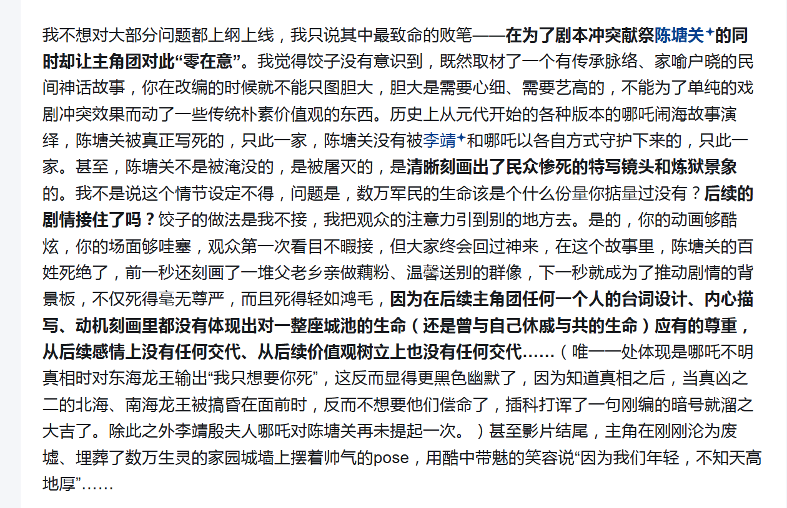
这点确实，之前我的评论没想到这点。
个人认为陈塘关被毁灭这点真的算是饺子所说的“不留后路”，真不知道第三部怎么圆。
至于这个答主所谓的“后续剧情没接住”就有点过于吹毛求疵了，第二部的剧情已经超时到不得不删镜头的程度了，哪有时间继续深挖陈塘关的？这是第三部的任务，这一部分的评价将取决于第三部怎么圆。
我在上边也说完了自己的想法，哪吒从打申公豹爹之后的剧情一环套一环，节奏非常好，最后的大战环节更是浑然一体，如果像这个答主所说的再拐一嘴陈塘关，那就完全打破这种节奏了，这就是完完全全的舍本逐末。陈塘关的问题应该留给第三部解决，它不是第二部的任务。
只能说尽管哪吒2取得了巨大成功，但是中国动画电影还任重而道远啊。从大闹天宫到哪吒1用了4年，中间扑街了无数作品；从哪吒1到哪吒2用了5年，中间也扑街了无数作品，也就一个长安三万里还算成功。路还要慢慢走的。
比起动画电影，真人电影那边更令人担忧。23年满球之战满江红胜了，24年群魔乱舞让人看不到希望，25年要是没有哪吒的话更是满地鸡毛，哪吒2的成功一方面反映出中国电影市场的上限之大，另一方面也反映出中国电影之垃圾，中国电影仍任重而道远啊。
就目前来看，中国电影还处于冯小刚所说的垃圾观众养垃圾电影阶段，也就是哪吒2遇到了25年这个对手全拉胯的春节档，要是把哪吒2放在24年和贾玲减肥记对碰，或者放在23年大战满江阴兵，鹿死谁手还真不好说。
有一说一挺想去和这个答主争论的，不过感觉也没必要。毕竟114514个读者心里有1919810个哈姆雷特，并且哪吒2现在实在是太顺了，多一些不同的意见也很好，要是大家都夸不挑刺的话饺子怎么搞第三部？对于饺子而言，挑刺比一味赞扬更重要，毕竟饺子作为商业导演的成功之处就在于能够充分利用好自己的优势，他对哪吒2的优点肯定是有自知之明的。当然某些无脑黑的还是越少越好。
这是迄今为止我看到的《哪吒2》最深刻的影评，作者竟然是一位美国老大爷 - 审言的文章 - 知乎
https://zhuanlan.zhihu.com/p/24131450174
2025.02.17
(191225) 1917
档期：
北美2019-12-25
中国大陆2020-08-07
1917 (豆瓣)
忘记啥时候看的，和我妈在家看的。
制作：
一镜到底的典范作品。别管它是真一镜到底还是假一镜到底，至少看起来是一镜到底。
尽管我不是考据党，但是电影对于前线战争的还原确实看起来不错，能让人感受到战争的紧迫感。
剧情：
最想吐槽的是男二去救那个德国飞行员反被反杀的那一幕。你圣母心大发救敌人也就罢了，你救人之前不去缴械？
时间有点太久远了，具体细节早已回想不出来了。不过电影当时看起来还是挺震撼的。电影的魅力就在这里，它在极短时间内所能带来的震撼是动画、游戏、电视剧等其他形式所无可比拟的。
2025.02.08
(240210) 热辣滚烫
档期：2024春节档
记得看完似乎写过影评来着的，咋找不到了？
豆瓣评价：没想到前作李焕英大获成功的贾玲导演的下一步作品竟然是改编？如果本片是贾玲原创的话我还愿意给较好的评价，但是可惜本片是改编。感动都是原片百元之恋的，贾玲的只有减肥和一地鸡毛。
在2025年重新回顾热辣滚烫，只能说贾玲和饺子两位新人导演在首部电影作品大获成功之后（均为50亿级别作品），选择的是截然相反的道路：贾玲选择了改编+营销+流量，最终名声败坏；而饺子选择了脚踏实地，最终名利双收。
说实话我还是想不通贾玲为什么在李焕英大获成功之后选择了改编和流量，这不是自毁长城吗？她难道不知道李焕英的成功之处在哪里吗？李焕英的原创性和真情实感，热辣滚烫居然哪个都没继承！贾玲选择改编百元之恋的理由，要么就是她哪天看了百元之恋被感动的一塌糊涂然后起了改编之心，要么就是突发奇想想减个肥换个赛道立一下人设于是选择买了个日片的版权来做改编，要么就是被周围人忽悠的，不管哪一个都不是这样糊弄观众的理由。
抛开贾玲减肥记不谈（尽管贾玲有专业的减肥团队和高额的回报，但是能坚持减肥还是不容易的。贾玲在减肥方面的努力是值得认可的），本片剩下的部分只有一个最佳镜头和一地鸡毛。那个最佳镜头指的是贾玲被接连背叛之后的长达几分钟的雨天上楼的准备紫砂的那个镜头，这段的演出效果是真的好。除了这个最佳镜头以外真的只剩下一地鸡毛了。
电影整体剧情：一地鸡毛=》被背叛准备紫砂没死成=》减肥打拳，就酱。放在10年前或许还有人买账，放在24年也太糊弄人了吧？流言中所说的热辣滚烫的3.5亿成本，都花在哪里了？ 100w制作 5000w演员片酬 1000w买版权 剩下的都用在宣传上了吧？
(7 封私信 / 80 条消息) 电影《热辣滚烫》成本3.5亿，那么高的制作成本花哪里了？这种高成本制作对中国电影行业有什么影响？ - 知乎
只能说2024年能让贾玲减肥记成为票房冠军，真不怪冯小刚说中国的观众太垃圾。(7 封私信 / 80 条消息) 如何看待冯小刚「中国垃圾电影太多，是因为有垃圾观众捧场」的言论？ - 知乎
2024年成为近年来中国电影票房最惨的一年不是没有原因的。
当然热辣滚烫的票房大卖的主要原因还是在于漫天铺地的营销和利用女权主义吸引女拳进电影院，不过这部电影能在豆瓣获得7.5的高分那就不只是营销的问题了。
热辣滚烫 (豆瓣) 豆瓣评分7.5，豆瓣之耻。只能说现在的简中互联网真的是，被各种对立搞得连最基本的审美能力都不讲了。豆瓣评分也就图一乐吧。
评分： 如果是原创片的话能给个及格分5分，但是作为改编片，照葫芦画瓢都能改成这样，3分走起。 5分给贾玲的减肥，-2分给垃圾的其余部分。
尽管时隔1年，但是这篇影评还是越写越生气，唉。
有一说一贾玲还是有自知之明的，如果单从下面这个访谈来分析的话，说明贾玲可能真的就是想减个肥顺便拍个纪念电影的，结果票房搞到2024年冠军真就是……唉。
能在2024年还能让这种垃圾电影名利双收（指票房34亿豆瓣评分7.5分），真不怪冯小刚说中国垃圾电影太多，是因为有垃圾观众捧场。
唉。
不过好消息是比热辣滚烫更烂的电影还是活不下来的，真要说烂片的话，24年的烂片真可谓是层出不穷，热辣滚烫还真排不上号。
《热辣滚烫》可能是近十年来最让我恶心的电影 - 啤酒橘子Virtus的文章 - 知乎
https://zhuanlan.zhihu.com/p/682439301
2025.02.16
(110708) 魁拔之十万火急
档期：2011年暑假档。
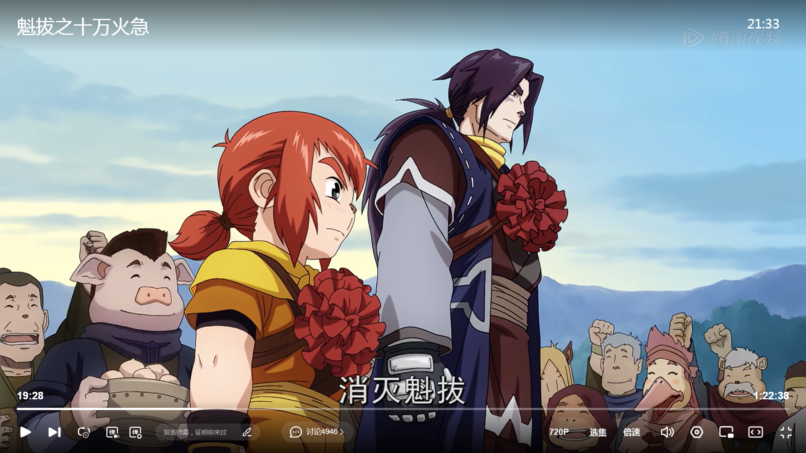
经典大红花这里真的没绷住。用今天的话来说应该算是在电影中讲好“中国故事”。
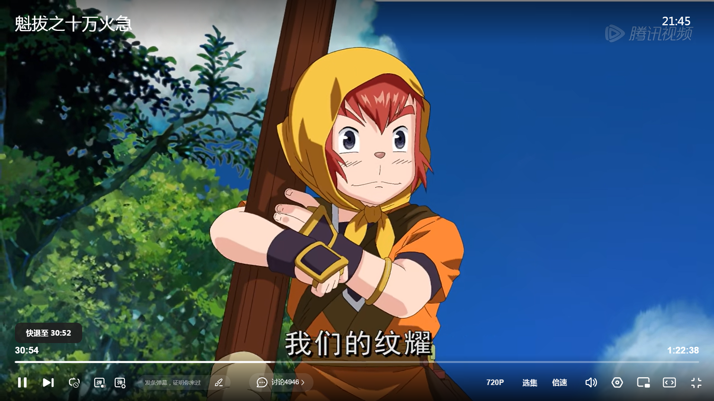
右上角有一处作画失误，当然也有一定可能是片源问题。
豆瓣评价：
童年的回忆。个人感觉魁拔1的最大问题在于，它本不应该是一部电影的。制作组完全是用TV动画的思路来做电影，整个电影83分钟更像是4集动画拼接在一起的结果。因此不论是从商业角度还是从制作角度，将魁拔1作为电影上映而不是作为TV动画上映都是一笔败笔。
在腾讯视频上看完了，感觉有点意难平。
制作：
豆瓣长评所说的3500w制作成本还真的不夸张。在2011年这个完完全全的国产动画荒漠的时代，想要制作出这个水准的动画真的要痛下血本，尤其是电影前5分钟居然还整了个科幻风格的战斗，完全就是在燃烧经费。要知道在2011年，能达到这种水平的日本动画（指TV版）都不多见。
当然这个制作在2025年的今天当然不算优秀，即使放在TV版动画中，甚至在现在的异世界厕纸中都不算非常好的制作，这只能让人感慨动画行业还是发展了许多的。
考虑到时代因素，这个制作在2011年可以完全说是大制作；当然不能和2011年的美漫大电影比，美国人太有钱了；至于同时代的中国动画电影，比如喜洋洋大电影的话，具体对比有待于我们后续研究。
顺带一提8年后的哪吒1的制作成本为6000w，只能说在这8年之间中国动画行业还是成熟了不少的，19年的中国动画行业已经能用较少的成本制作出真正意义上高水准的动画了。
配音：
不至于扣分的程度，不如说2011年那种连最基本的配音产业都没建立好的情况下，能配出这个水平的真的已经是很不容易了。
音乐：没啥印象，不至于扣分。
剧情：
该怎么说呢，即使考虑到时代因素这个剧情也很难说的上是良好，甚至可以说这个剧情把该踩的坑都踩了一遍。可以说魁拔制作组是拿着满腔热血去开拓中国动画的荒原，但是不能只凭着一腔热血就入军影线吧？这不愣头青吗？
剧情方面的问题一大堆，比如世界观太大而时长太少根本讲不完，比如开局就搞一堆设定塞爆观众的脑袋，比如剧情老套各种情节过于典（即使考虑到时代因素，这些剧情也有点典了。不过当年或许就吃这一套），比如角色令人感到头疼（特指蛮大人，和公主纠缠不清的感情线，欺骗满吉各种耍性子，最重要的是最后上船的时候满吉都被打成那样了这人还能沉得住气？），但是这些说实话都不是重点。
最重要的是，个人感觉这82分钟的剧情完全就不像是一部电影的样子，更像是3~4集TV动画拼接而成的，它的节奏实在是太慢太慢了，剧情信息量密度很低（即使考虑到设定已经塞满的情况下）。这也是让我感觉观感最差的一个点，制作组完全就是用制作TV版动画的思路来制作动画电影的，他们难道自己没感觉到吗？
开局几分钟塞了一堆设定给观众，剩下几十分钟水水水讲了个开头，还没开始电影就结束了，哪有这样的电影？正常电影最起码能做到在一个小时多的时间里讲完一个完整的、有始有终的故事吧，你这就开了个头就没了，有点说不过去吧？
这部电影就不应该上影线，而是应该拆成4集动画作为TV版动画来上映，然后再制作20集或者更多的集数来补全剧情。制作组的想法我是真的没想明白。
总之，因为这个点，即使在有童年情怀的情况下也让我的重看魁拔的体验极差，只能说2011年的中国动画行业真的没有讲好动画故事的能力，即使痛下血本也弥补不了讲不好故事的漏洞，唉。
评价：
考虑时代因素： 6分+2分感情分。国产动画电影的拓荒者，在当年国产动画的荒漠中收获了不少粉丝，可以说是国产动画电影的一个里程碑了。
不考虑时代因素：3分。不及格的电影，勉强及格的动画，仅凭一腔热血入军电影行业的愣头青，死在国产动画电影拓荒之路上的先驱者。
尽管整整14年过去了，如今取得成功的中国动画电影依旧是屈指可数，中国动画电影依旧是一片蓝海，令人感叹。
2025.02.16
顺便摘一些n年前的豆瓣长评，你就能体会那个年代中国动画行业是有多么绝望。
[为了这稀有又宝贵的“正常”（魁拔之十万火急）影评](https://movie.douban.com/review/5019086/
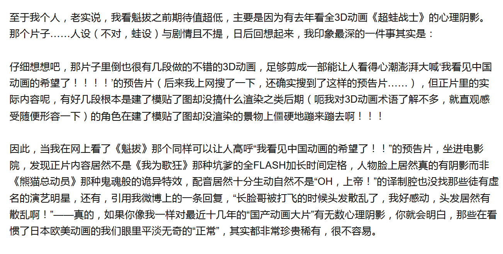
当年的制作水平和制作态度真的令人绝望啊。
７月８号上映的《魁拔》能为中国动画带来什么？（魁拔之十万火急）影评
好文章，当年的知乎的水平还是可以的。
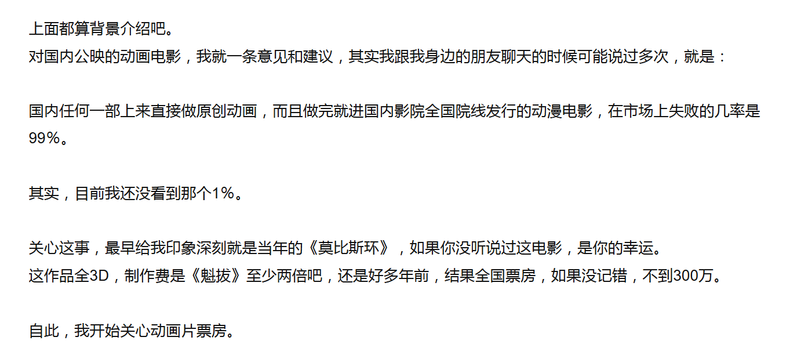
说实话现在的没有搞IP（或者说在电影之前没有搞过其他形式的作品的纯原创电影）从0开始的原创动画电影依旧没几个成功的。抛开有名著背书的哪吒、大闹天宫、姜子牙以外，也就只有神秘世界历险记、神笔马良、大鱼海棠、长安三万里等电影还算成功。
单论票房的话也就只有哪吒、熊出没、长安三万里和姜子牙的票房突破10个亿，大圣归来和深海的票房为9亿多，再往下就直接断层到5.8亿的白蛇2。仅从票房来看，中国动画电影仍然还是一篇蓝海啊。
不过要是从制作的角度来看，动画电影倒可以称得上是红海：新上映的动画电影的制作水准首先得打得过坐小孩那桌的名作之壁——熊出没，不然别想在这本就不大的动画电影市场中分一杯羹（当然谈论动画电影市场请忽略哪吒，它太bug了，没法谈）。就熊出没这历经十多年建立起的强大电影工业，哪怕真人电影都没几个制作水准比它强的，更何况是动画电影了。
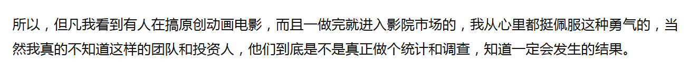
个人感觉魁拔团队是真的没做这个调查，唉。
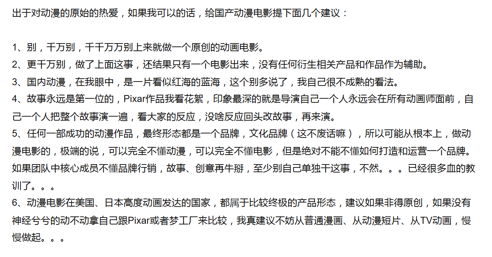
现在也基本适用，尤其是第4点，这点就是饺子的成功的原因之一，可以从哪吒2幕后纪录片看出来。 至于2、5、6则是一些商业层面的建议，对于连熊出没都打不过的动画电影还是比较实用的。（当然能打得过熊出没的就那几个）
国产动画的成人礼（魁拔之十万火急）影评
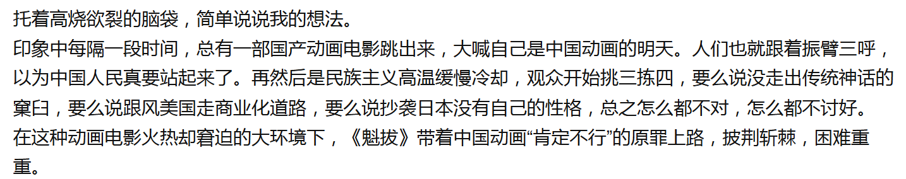
悲，国产动画电影真正的明天还得等到15年的大圣归来。并且至今为止中国动画电影也没走出传统神话的窠臼，或者说市场证明中国动画电影的出路之一就在于传统神话，就在于中国文化。原创动画电影的真正明天依旧虚位以待。
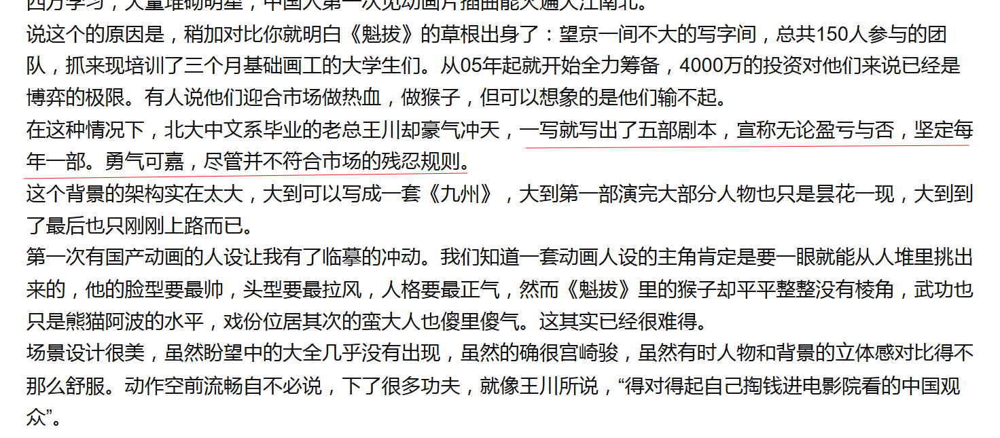
真的疯了，真的就是不尊重市场规律，哪有这样搞电影的？不是说满腔热血不可取，起码得尊重一下社会现实和市场规律吧？理想主义归理想主义，要是只顾幻想不考虑实际的话那就完完全全是傻x。
最终的结果我们也都知道了，魁拔5直接被砍掉了，而系列最终制作魁拔4到现在都没上映。
万老师，我先走了……（魁拔之十万火急）影评
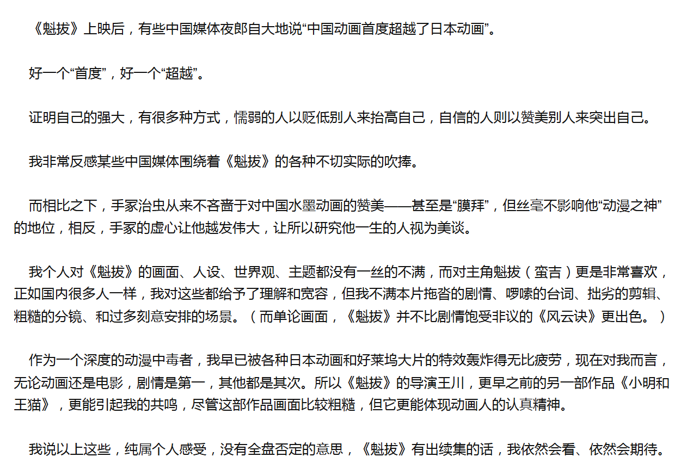
支持。
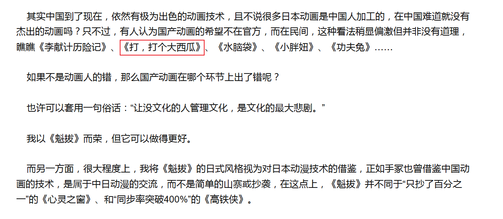
结果中国动画的希望还真出在打个大西瓜上了，令人感慨。
别拿狗血当热血（魁拔之十万火急）影评
这篇主要是集中在对电影本身的分析，其中的观点我都比较赞成。
总之就这样了，有时间再回顾一下魁拔2、3。至于4，目前真的没啥希望了。正如知乎某回答所说，自15年大圣归来之后国产动画电影进入了发展期，而与此同时魁拔出完3之后亏的一贫如洗进入了衰退期。如今的国产动画电影的门槛已经被熊出没抬高了，观众的口味已经被养刁了，要是依旧以10年前的水准去制作魁拔4的话，只会连最后的名声都败坏光了。
作为系列收尾制作，要是连熊出没的制作水平的一半都达不到的话，那就真不如活在人们的幻想中吧。
(7 封私信 / 80 条消息) 为什么《魁拔》第一部进不了电影院，《大圣归来》却这么火？ - 知乎
这个回答下边更是一针见血的。此时魁拔已经出完3，而大圣归来的横空出世让中国动画电影的崛起真正的成为一个议题。
为什么《魁拔》第一部进不了电影院，《大圣归来》却这么火？ - 知乎
https://www.zhihu.com/question/33043288/answer/134983139
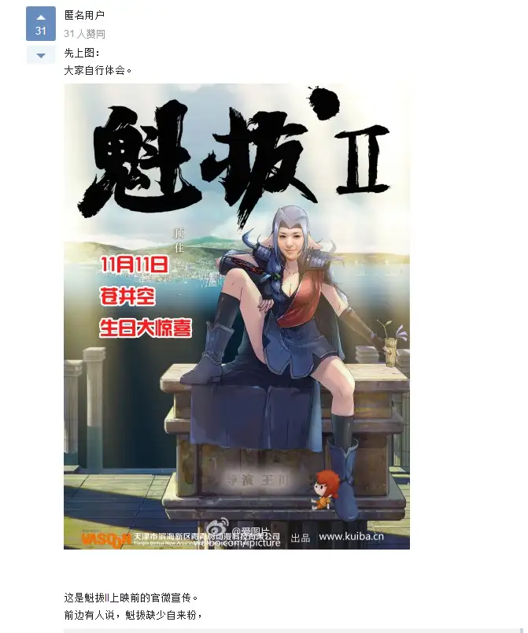
出处：为什么《魁拔》第一部进不了电影院，《大圣归来》却这么火？ - 知乎
https://www.zhihu.com/question/33043288/answer/56299720
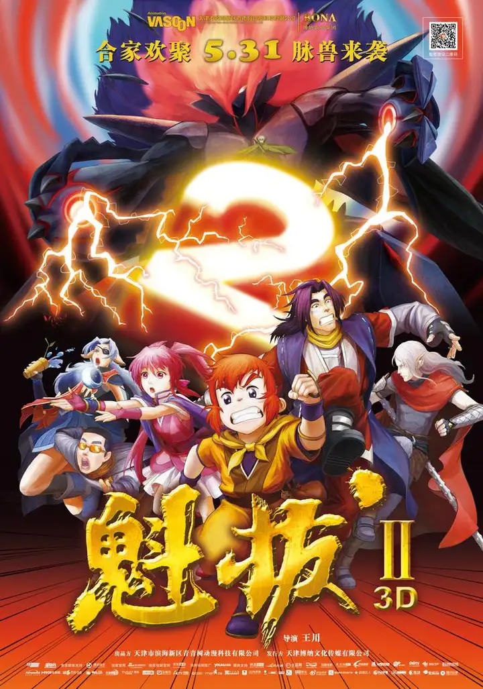
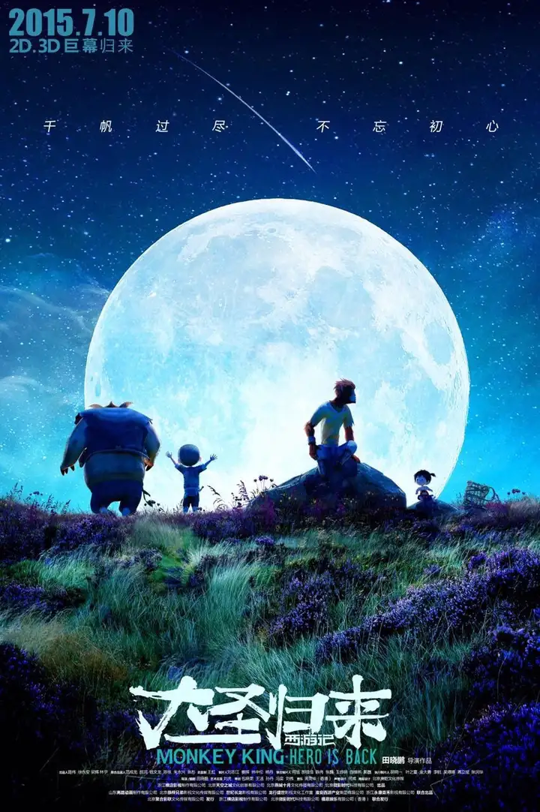
不言而喻，一目了然。
第一幅图暂且不提，魁拔2和大圣归来的海报之间的差异真的是一目了然：一个是真正的电影海报，一个就是把TV版番剧的封面拿来做海报。
这说实话都不是质量问题了，就是纯粹的定位和态度问题。大圣归来这张海报说实话就是张普通的电影海报，甚至感觉就是个熊出没量产型电影级别的海报，但是就这样的海报都与魁拔2的海报有了天壤之别……
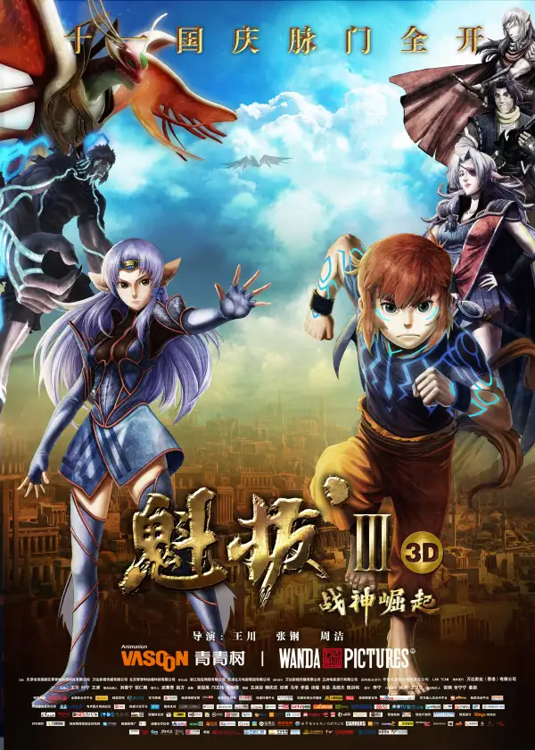
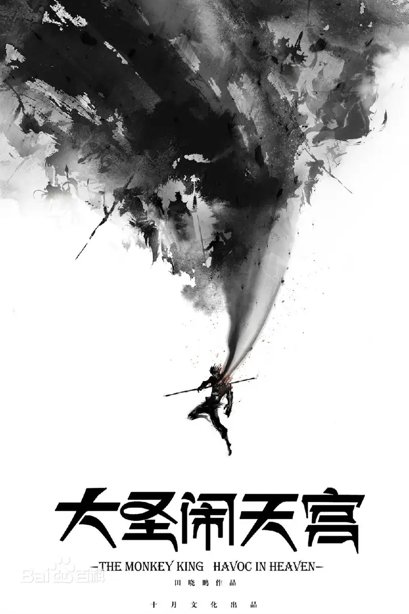
更是。这一组完全没法比了。
为什么《魁拔》第一部进不了电影院，《大圣归来》却这么火？ - 墨弇的回答 - 知乎
https://www.zhihu.com/question/33043288/answer/56382912
《魁拔之幽龙骑士》腰斩纪念
这是2012年干出来的事，一个无视市场规律的公司居然因为自认为漫画作品人气不好就把它给砍了——出于市场经济的逻辑，简直就是个笑话。
比起魁拔的世界观，不如说青青树更重视的是“动画电影”这个噱头。
用力过猛的《魁拔》 - 知乎
聊聊《魁拔》这点儿事（魁拔之十万火急）影评主创团队
《动漫人物志》第二十四篇 史诗马拉松 - 青青树《魁拔》系列2010 - 知乎
注意这个数字，他们光众筹就拿了378.5w元。
2025.02.17
(170922) 纯洁心灵·逐梦演艺圈
上映日期: 2017-09-22(中国大陆) / 2018-02-09(中国大陆重映) / 2015-12-10(旧金山环球国际电影节)
开局一段不明所以的飙车戏，刚逼停对手就切镜头。
序
介绍富二代王熠，给了几个豪车邮轮的镜头
第一章：青春大舞台 粉墨来登场
开生日party，各种炫富。
然后话头一转，转到俩普通家庭的学生。
第二章： 青涩好年华 逐梦演艺圈
转向学生的视角。
第三章： 宝宝心里苦 但宝宝不说
开局影射剧组潜规则。
不是你这章怎么讲一半就结束了？
第四章： 林子大以后 什么鸟都有
呃呃直接扮伪娘搞副导演。
然后又直接中场休息（？？？）放了个卖肉比基尼舞蹈。
结尾更是狗血什么大卡车装老太太然后学生去救人的剧情。剧情狗血+演出狗血。
第五章： 花开花落去 青春不复返
这章终于呼应开头了。
讲为了给学生找片子文老师去和老板谈判，然后老板想要潜规则女学生，然后那个黎族女孩就为了文老师（前面有说她喜欢文老师）就自愿被潜，然后就是开头的剧情了。文老师在小女孩给的花的鼓舞下疯狂追老板的车，又把黎族女孩抢回来了。
后边这段也有点意思，文老师去海边发疯唱歌，或者说是跳海紫砂未遂。
最后某个学生莫名奇妙被绑架勒索了然后文老师去救，然后被打得差点寄了。然后病床前他那个小女友又回来了。
最后就是包饺子。各方面努力下（或者说靠学生的各种关系）文老师成功带领全班拍了个毕业电影。
最后直接去跳伞，表达逐梦演艺圈要勇敢的思想。
最后的最后就是那首著名的SNH48的《逐梦演艺圈》了。
……我在干什么……
评价： -114514，这就是💩。
优酷还有个毕志飞同声评论，不过我不认为有必要再吃一遍💩。这部片还是留给电影系的吃吧。
顺带一提本片荣获第9届金扫帚奖- 最佳影片和最佳导演，实至名归。
主要是我真的想不通毕志飞是怎么把这样一坨💩就原封不动的给端上来了？他难道不知道自己搞的是💩吗？
没救了，真的。
近年来最牛逼的行为艺术（纯洁心灵·逐梦演艺圈）影评
令人拍案叫绝，凭借一己之力把半个电影圈的内裤都扒了。
《逐梦演艺圈》导演起底:有个好丈人是怎样一种体验？ - 知乎
牛，这是真本事，毕志飞要是能把自己如何成功穷小子追千金大小姐的故事拍成电影，名声不得比现在高啊？
2025.02.17
749局
开局的cg展示看起来不错。
刚开局看起来像模像样的。
后边来了个追捕马山的跑酷戏也像模像样。
然后靠着地铁把马山给抓紧749了
然后莫名其妙给他来了套挨打测试。